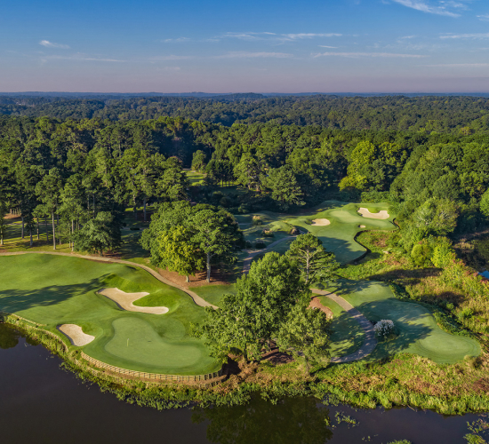

home
> 사업분야 > 골프
골 프
완벽한 코스, 천혜의 자연환경
1984년 플라자CC 설악 개장 이후 국내 최다 골프클럽을 보유하고 있는 한화호텔&리조트 골프 클럽은 각각의 특성을 보유한 완벽한 코스, 산과 바다가 어우러진 천혜의 자연환경, 최고의 시설과 서비스를 보유하고 있습니다.설악과 용인, 일본 나가사키등 72홀의 회원제 골프장과 제주에 9홀 퍼블릭 골프장을 운영하고 있습니다.
-
- 플라자CC용인
-
서울에서 가장 가까운 거리 여유있는 36홀의 골프코스
가벼운 가족나들이와 비즈니스에 적합한 리조트로 골프장은 넓은 페어웨이, 천연지세를 그대로 활용한 빼어난 코스설계가 골퍼의 마음을 사로잡습니다. 수도권과 인접해 있으며 오산 및 기흥 IC에서 가깝다는 장점이 있으며 골프 코스가 차별화 되어 있어 선호도에 따라 선택의 폭이 넓습니다. 홈페이지 add_circle
-

- 플라자CC제주
-
제주의 풍광을 그대로 간직한 코스, 플라자CC 제주로 초대합니다.
플라자CC 제주는 9홀 코스를 티잉그라운드와 그린을 다원화시킨 TWO-TEE, ONE-FAIRWAY, TWO-GREEN SYSTEM으로 조성되어 있어 18홀 느낌 그대로 골프를 즐기실 수 있습니다. 특히 4홀은 코스 전체가 제주에서만 느낄 수 있는 원시 수림대에 둘러싸인 자연 친화적인 공간이며, 7홀은 ISLAND HOLE로 골프의 묘미를 만끽할 수 있습니다. 홈페이지 add_circle
-
- 플라자CC용인설악
-
대한민국 천혜의 아름다움을 간직한 자연을 선사해 드립니다.
변화무쌍한 설악산의 4계절, 굽이굽이 솟은 울산바위, 비취 빛 푸른 동해바다를 배경으로 전통과 역사가 살아 숨쉬는 18홀 회원제 골프장 플라자CC 설악에서는 자연이 만들어 낸 감동을 느끼며 여유있는 라운드를 즐기실 수 있습니다. 가치있는 분들만의 DREAM SOCIETY 바로 이 곳, 플라자CC 설악에서시작해 보십시오. 홈페이지 add_circle
-
- 오션팰리스 골프&리조트
-
꿈을 현실로 만든 골프장,바다에 떠있는 푸른 자연의 코스
OPGC는 골프를 즐기기에 천혜의 자연조건과 사계절을 갖췄습니다. ‘육지 속의 바다’라는 일본큐슈 오무라만에 자리 잡고 있는 OPGC은 천혜의 자연조건을 갖춘 시사이드(Sea side) 코스입니다. Ocean Palace Golf Club의 특징은 다섯 홀의 해협 및 만을 넘기는 코스가 있으며, 숨 막히는 도시에서 쌓인 피로를 자연의 힘으로 편안하게 쉴 수 있는 힐링 코스가 될 것입니다. 홈페이지 add_circle